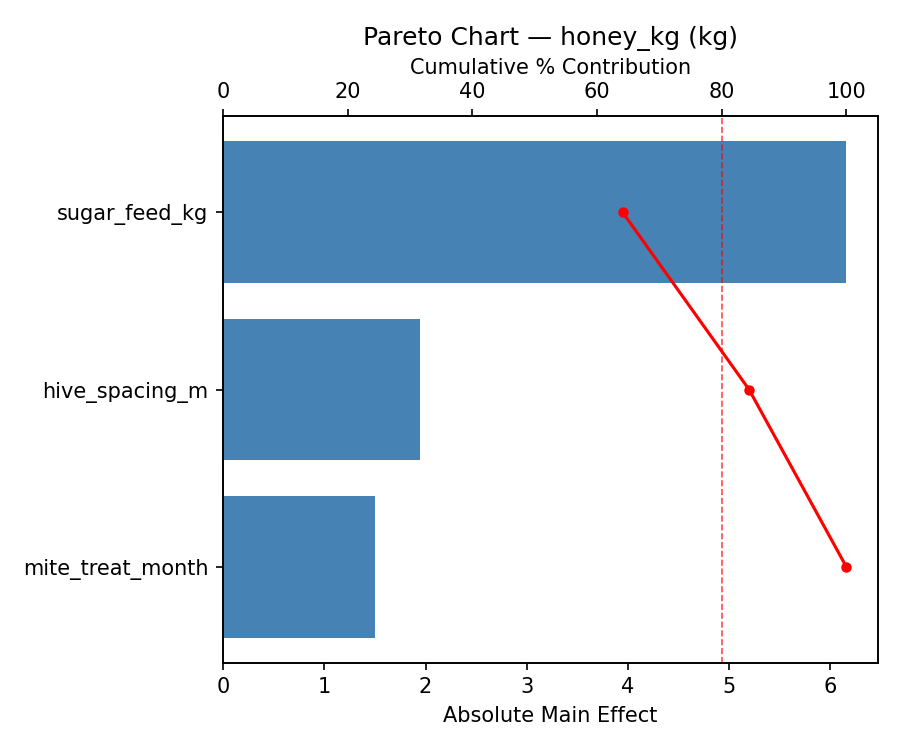
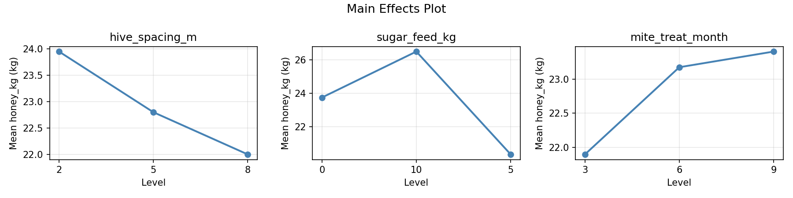
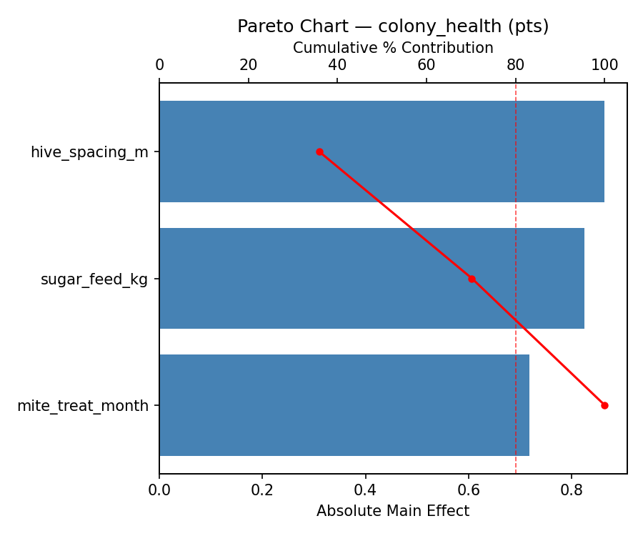
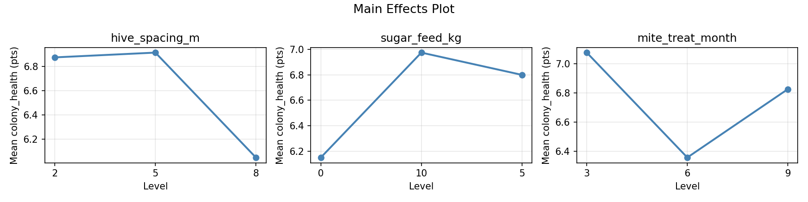
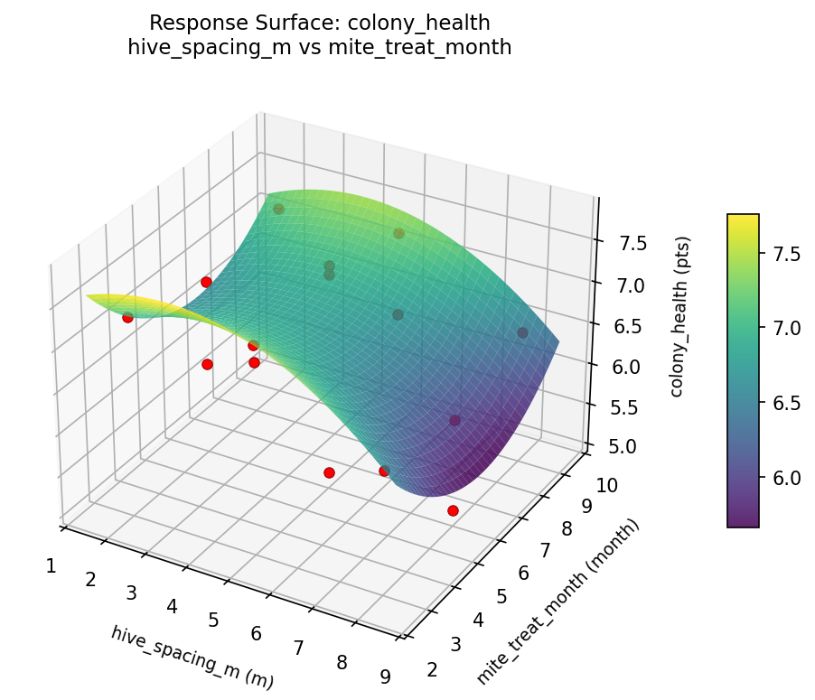
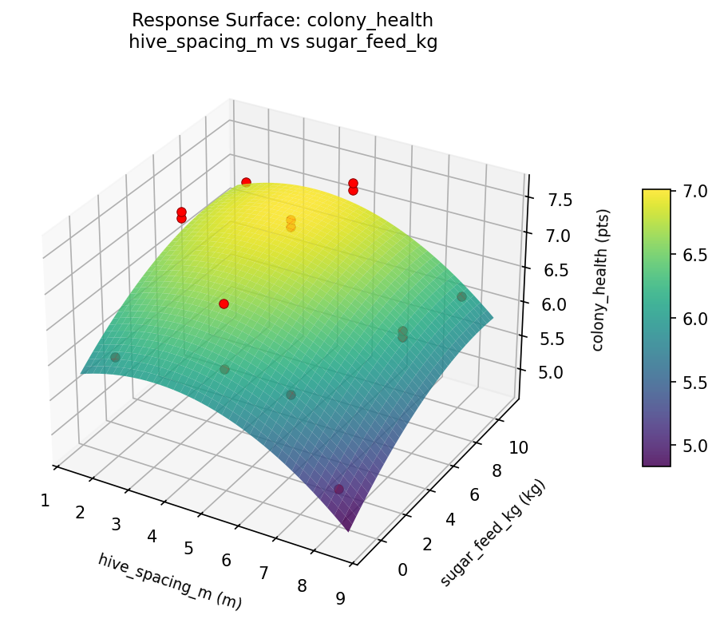
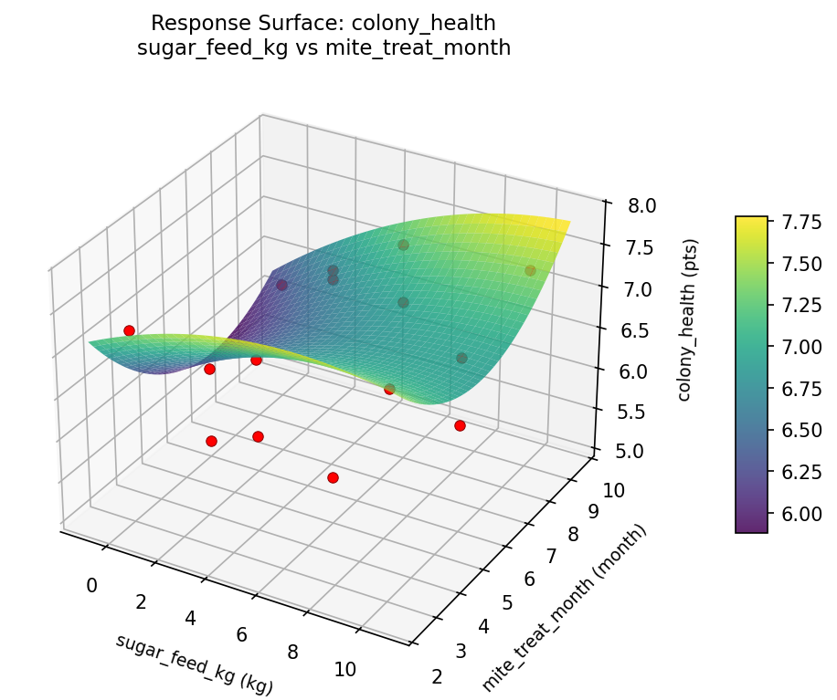
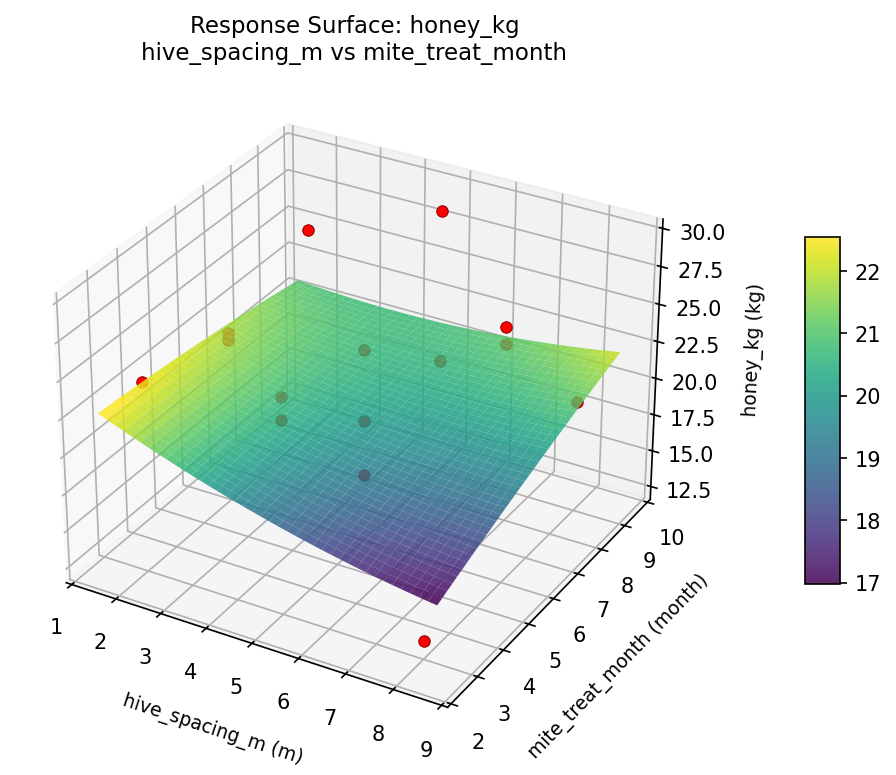
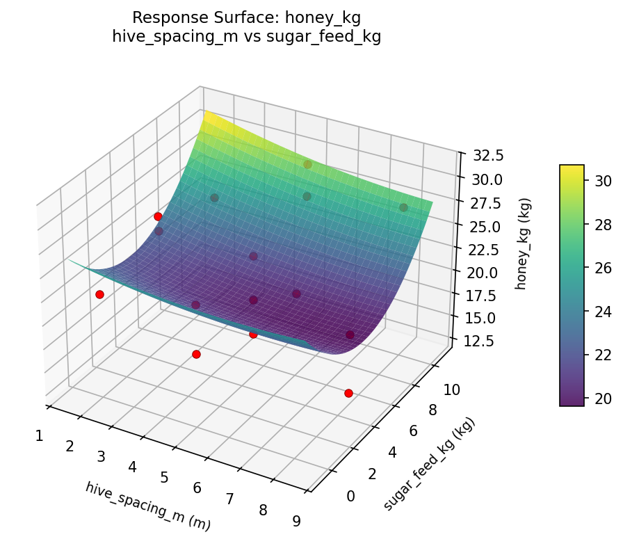
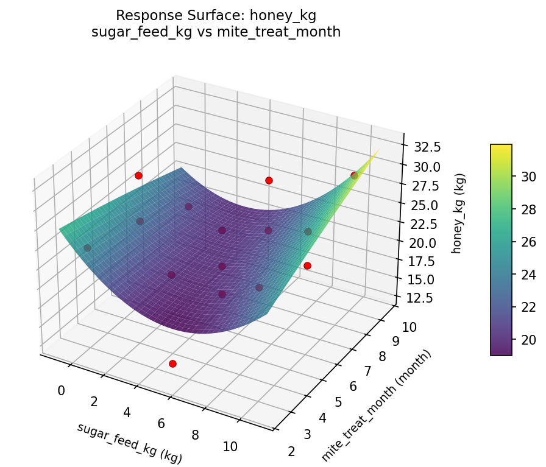

Summary
This experiment investigates beehive honey production. Box-Behnken design to maximize honey yield and colony health by tuning hive spacing, supplemental feeding, and mite treatment timing.
The design varies 3 factors: hive spacing m (m), ranging from 2 to 8, sugar feed kg (kg), ranging from 0 to 10, and mite treat month (month), ranging from 3 to 9. The goal is to optimize 2 responses: honey kg (kg) (maximize) and colony health (pts) (maximize). Fixed conditions held constant across all runs include bee species = apis_mellifera, frames = 10.
A Box-Behnken design was chosen because it efficiently fits quadratic models with 3 continuous factors while avoiding extreme corner combinations — requiring only 15 runs instead of the 8 needed for a full factorial at two levels.
Quadratic response surface models were fitted to capture potential curvature and factor interactions. The RSM contour plots below visualize how pairs of factors jointly affect each response.
Key Findings
For honey kg, the most influential factors were sugar feed kg (64.1%), hive spacing m (20.3%), mite treat month (15.6%). The best observed value was 29.4 (at hive spacing m = 5, sugar feed kg = 0, mite treat month = 3).
For colony health, the most influential factors were hive spacing m (35.9%), sugar feed kg (34.3%), mite treat month (29.8%). The best observed value was 7.6 (at hive spacing m = 2, sugar feed kg = 5, mite treat month = 3).
Recommended Next Steps
- Run confirmation experiments at the predicted optimal settings to validate the model.
- Consider whether any fixed factors should be varied in a future study.
Experimental Setup
Factors
| Factor | Low | High | Unit |
|---|
hive_spacing_m | 2 | 8 | m |
sugar_feed_kg | 0 | 10 | kg |
mite_treat_month | 3 | 9 | month |
Fixed: bee_species = apis_mellifera, frames = 10
Responses
| Response | Direction | Unit |
|---|
honey_kg | ↑ maximize | kg |
colony_health | ↑ maximize | pts |
Configuration
{
"metadata": {
"name": "Beehive Honey Production",
"description": "Box-Behnken design to maximize honey yield and colony health by tuning hive spacing, supplemental feeding, and mite treatment timing"
},
"factors": [
{
"name": "hive_spacing_m",
"levels": [
"2",
"8"
],
"type": "continuous",
"unit": "m"
},
{
"name": "sugar_feed_kg",
"levels": [
"0",
"10"
],
"type": "continuous",
"unit": "kg"
},
{
"name": "mite_treat_month",
"levels": [
"3",
"9"
],
"type": "continuous",
"unit": "month"
}
],
"fixed_factors": {
"bee_species": "apis_mellifera",
"frames": "10"
},
"responses": [
{
"name": "honey_kg",
"optimize": "maximize",
"unit": "kg"
},
{
"name": "colony_health",
"optimize": "maximize",
"unit": "pts"
}
],
"settings": {
"operation": "box_behnken",
"test_script": "use_cases/172_beehive_management/sim.sh"
}
}
Experimental Matrix
The Box-Behnken Design produces 15 runs. Each row is one experiment with specific factor settings.
| Run | hive_spacing_m | sugar_feed_kg | mite_treat_month |
|---|
| 1 | 5 | 0 | 3 |
| 2 | 5 | 5 | 6 |
| 3 | 8 | 5 | 9 |
| 4 | 8 | 5 | 3 |
| 5 | 5 | 5 | 6 |
| 6 | 5 | 5 | 6 |
| 7 | 2 | 5 | 9 |
| 8 | 8 | 0 | 6 |
| 9 | 5 | 0 | 9 |
| 10 | 8 | 10 | 6 |
| 11 | 2 | 5 | 3 |
| 12 | 5 | 10 | 9 |
| 13 | 2 | 0 | 6 |
| 14 | 2 | 10 | 6 |
| 15 | 5 | 10 | 3 |
Step-by-Step Workflow
1
Preview the design
$ python doe.py info --config use_cases/172_beehive_management/config.json
2
Generate the runner script
$ python doe.py generate --config use_cases/172_beehive_management/config.json \
--output use_cases/172_beehive_management/results/run.sh --seed 42
3
Execute the experiments
$ bash use_cases/172_beehive_management/results/run.sh
4
Analyze results
$ python doe.py analyze --config use_cases/172_beehive_management/config.json
5
Get optimization recommendations
$ python doe.py optimize --config use_cases/172_beehive_management/config.json
6
Generate the HTML report
$ python doe.py report --config use_cases/172_beehive_management/config.json \
--output use_cases/172_beehive_management/results/report.html
Features Exercised
| Feature | Value |
|---|
| Design type | box_behnken |
| Factor types | continuous (all 3) |
| Arg style | double-dash |
| Responses | 2 (honey_kg ↑, colony_health ↑) |
| Total runs | 15 |
Analysis Results
Generated from actual experiment runs using the DOE Helper Tool.
Response: honey_kg
Top factors: sugar_feed_kg (64.1%), hive_spacing_m (20.3%), mite_treat_month (15.6%).
Pareto Chart

Main Effects Plot

Response: colony_health
Top factors: hive_spacing_m (35.9%), sugar_feed_kg (34.3%), mite_treat_month (29.8%).
Pareto Chart

Main Effects Plot

Response Surface Plots
3D surfaces fitted with quadratic RSM. Red dots are observed data points.
colony health hive spacing m vs mite treat month

colony health hive spacing m vs sugar feed kg

colony health sugar feed kg vs mite treat month

honey kg hive spacing m vs mite treat month

honey kg hive spacing m vs sugar feed kg

honey kg sugar feed kg vs mite treat month

Full Analysis Output
RSM surface: rsm_honey_kg_hive_spacing_m_vs_sugar_feed_kg.png
RSM surface: rsm_honey_kg_hive_spacing_m_vs_mite_treat_month.png
RSM surface: rsm_honey_kg_sugar_feed_kg_vs_mite_treat_month.png
RSM surface: rsm_colony_health_hive_spacing_m_vs_sugar_feed_kg.png
RSM surface: rsm_colony_health_hive_spacing_m_vs_mite_treat_month.png
RSM surface: rsm_colony_health_sugar_feed_kg_vs_mite_treat_month.png
=== Main Effects: honey_kg ===
Factor Effect Std Error % Contribution
--------------------------------------------------------------
sugar_feed_kg 6.1571 1.2079 64.1%
hive_spacing_m 1.9500 1.2079 20.3%
mite_treat_month 1.5000 1.2079 15.6%
=== Summary Statistics: honey_kg ===
hive_spacing_m:
Level N Mean Std Min Max
------------------------------------------------------------
2 4 23.9500 1.4248 22.6000 25.8000
5 7 22.8000 4.5775 16.1000 29.4000
8 4 22.0000 7.4579 12.8000 28.6000
sugar_feed_kg:
Level N Mean Std Min Max
------------------------------------------------------------
0 4 23.7500 3.8820 19.3000 28.6000
10 4 26.5000 2.6596 23.1000 29.4000
5 7 20.3429 4.8211 12.8000 25.8000
mite_treat_month:
Level N Mean Std Min Max
------------------------------------------------------------
3 4 21.9000 6.1139 12.8000 26.0000
6 7 23.1714 4.3142 16.1000 28.6000
9 4 23.4000 5.0682 19.1000 29.4000
=== Main Effects: colony_health ===
Factor Effect Std Error % Contribution
--------------------------------------------------------------
hive_spacing_m 0.8643 0.2115 35.9%
sugar_feed_kg 0.8250 0.2115 34.3%
mite_treat_month 0.7179 0.2115 29.8%
=== Summary Statistics: colony_health ===
hive_spacing_m:
Level N Mean Std Min Max
------------------------------------------------------------
2 4 6.8750 0.5965 6.0000 7.3000
5 7 6.9143 0.9082 5.1000 7.6000
8 4 6.0500 0.6455 5.1000 6.5000
sugar_feed_kg:
Level N Mean Std Min Max
------------------------------------------------------------
0 4 6.1500 0.8660 5.1000 7.2000
10 4 6.9750 0.5439 6.2000 7.4000
5 7 6.8000 0.8832 5.1000 7.6000
mite_treat_month:
Level N Mean Std Min Max
------------------------------------------------------------
3 4 7.0750 0.4573 6.4000 7.4000
6 7 6.3571 1.0470 5.1000 7.6000
9 4 6.8250 0.4992 6.3000 7.3000
Pareto chart (honey_kg): use_cases/172_beehive_management/results/analysis/pareto_honey_kg.png
Pareto chart (colony_health): use_cases/172_beehive_management/results/analysis/pareto_colony_health.png
Main effects (honey_kg): use_cases/172_beehive_management/results/analysis/main_effects_honey_kg.png
Main effects (colony_health): use_cases/172_beehive_management/results/analysis/main_effects_colony_health.png
Optimization Recommendations
=== Optimization: honey_kg ===
Direction: maximize
Best observed run: #10
hive_spacing_m = 5
sugar_feed_kg = 0
mite_treat_month = 3
Value: 29.4
RSM Model (linear, R² = 0.1738, Adj R² = -0.0516):
Coefficients:
intercept +22.8933
hive_spacing_m +2.4125
sugar_feed_kg -0.8750
mite_treat_month +0.2625
RSM Model (quadratic, R² = 0.7590, Adj R² = 0.3252):
Coefficients:
intercept +25.7333
hive_spacing_m +2.4125
sugar_feed_kg -0.8750
mite_treat_month +0.2625
hive_spacing_m*sugar_feed_kg -4.2750
hive_spacing_m*mite_treat_month +1.6000
sugar_feed_kg*mite_treat_month +1.7250
hive_spacing_m^2 -4.7167
sugar_feed_kg^2 -0.7917
mite_treat_month^2 +0.1833
Curvature analysis:
hive_spacing_m coef=-4.7167 concave (has a maximum)
sugar_feed_kg coef=-0.7917 concave (has a maximum)
mite_treat_month coef=+0.1833 convex (has a minimum)
Notable interactions:
hive_spacing_m*sugar_feed_kg coef=-4.2750 (antagonistic)
sugar_feed_kg*mite_treat_month coef=+1.7250 (synergistic)
hive_spacing_m*mite_treat_month coef=+1.6000 (synergistic)
Predicted optimum (from quadratic model):
hive_spacing_m = 8
sugar_feed_kg = 0
mite_treat_month = 6
Predicted value: 27.7875
Model quality: Good fit — general trends are captured, some noise remains.
Factor importance:
1. hive_spacing_m (effect: 7.1, contribution: 73.2%)
2. sugar_feed_kg (effect: 1.8, contribution: 18.1%)
3. mite_treat_month (effect: 0.8, contribution: 8.7%)
=== Optimization: colony_health ===
Direction: maximize
Best observed run: #8
hive_spacing_m = 2
sugar_feed_kg = 5
mite_treat_month = 3
Value: 7.6
RSM Model (linear, R² = 0.1824, Adj R² = -0.0406):
Coefficients:
intercept +6.6733
hive_spacing_m -0.3625
sugar_feed_kg +0.2875
mite_treat_month +0.0000
RSM Model (quadratic, R² = 0.6385, Adj R² = -0.0122):
Coefficients:
intercept +6.1667
hive_spacing_m -0.3625
sugar_feed_kg +0.2875
mite_treat_month +0.0000
hive_spacing_m*sugar_feed_kg +0.1500
hive_spacing_m*mite_treat_month +0.0750
sugar_feed_kg*mite_treat_month +0.5250
hive_spacing_m^2 +0.3417
sugar_feed_kg^2 -0.2083
mite_treat_month^2 +0.8167
Curvature analysis:
mite_treat_month coef=+0.8167 convex (has a minimum)
hive_spacing_m coef=+0.3417 convex (has a minimum)
sugar_feed_kg coef=-0.2083 concave (has a maximum)
Notable interactions:
sugar_feed_kg*mite_treat_month coef=+0.5250 (synergistic)
Predicted optimum (from quadratic model):
hive_spacing_m = 2
sugar_feed_kg = 5
mite_treat_month = 3
Predicted value: 7.7625
Model quality: Moderate fit — use predictions directionally, not precisely.
Factor importance:
1. mite_treat_month (effect: 0.8, contribution: 38.2%)
2. hive_spacing_m (effect: 0.7, contribution: 34.3%)
3. sugar_feed_kg (effect: 0.6, contribution: 27.4%)